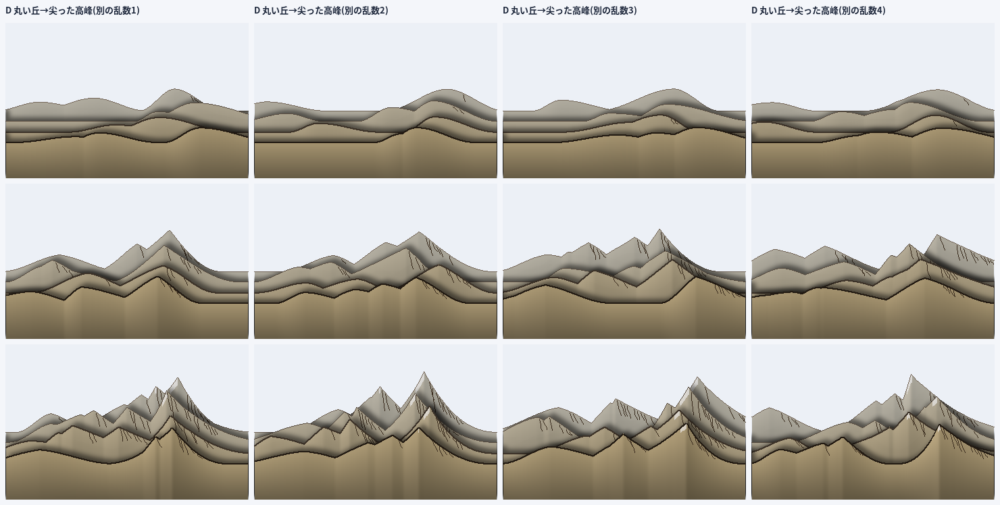

高低差から作る山の形と、重ねたときの芸術性
概要: ユーザー指示(2026-11-18)「形のパターンを高低差で作る場合の、汎用性と芸術性の融合に焦点を合わせる。重ねた時の芸術性も重要。背景の本当の形はどうでもいい」に沿って、「高さ」の数字ひとつから山並みを作る4つの描き方を、3つの高さで並べました。本物の山との近さは測らず、見た目の比較です。どれが良いかを選んでください。
4つの描き方 × 3つの高さ
 絵番号 E025
絵番号 E025
上段=低い(0.35)、中段=中くらい(0.65)、下段=高い(0.95)。どの絵も、手前から奥へ4枚を重ねています。
- A 頂点の位置と高さを乱数で決める(基準)
- B 主峰を黄金比の位置(左右どちらかの3/8付近)に置き、頂点は奇数で、副峰は0.618倍ずつ低くする
- C 段々に上がり、同じように下がる(最高峰の左右で対称な段)
- D 片側が丸い丘で、反対側へ尖った高峰に向かって、尖りが増す(ユーザー案「全体がなだらかから尖った高い山に」)
共通の決まり(高さだけから決める)
- 丸い→尖る: 高さが上がるほど尖る。低い山は丸いなだらかな丘、高い山は頂点だけ尖り、裾は穏やかな曲線(頂点だけ尖る)。
- 頂点の数と幅: 低い山は1〜3個の広い丘、高い山は3〜6個で、細い針は作らない(幅の下限あり)。
- 左右非対称: 山ごとに左右の裾の広さを変える。
- 重ね: 4枚を奥から手前へ。奥ほど薄く青みがかり(空気遠近)、手前ほど濃く暗い。手前の枚が奥の枚に影を落とす。
- 明暗: 左上の光。左向きの斜面は明るく、右向きは暗く、暗い面に細い線(尾根と谷の筋)。高い頂上だけ雪色。
- 色: 地図の山の4色(#dfc89d / #9a8d6b / #6d6144 / #3a3318)だけ。奥は空色(#bac6d6)へ寄せる。
汎用性の確認(Dで、乱数を変えて4回)

絵番号 E026同じ高さでも、乱数で頂点の位置・数・高さが変わります。高さを上げると、丘が山へ変わります。
私の見立て(未確認の主観)
- Dは、丸い丘から尖った高峰への流れが一番分かりやすく、高さの違いが絵に出ます。
- Bは、主峰が引き立ち、まとまりが一番良い印象です。
- Cは、尖った頂点が同じように並び、単調に見えます。Aは、まとまりに欠けます。
- これは私の見た印象で、測った結果ではありません。選ぶのはユーザーです。
限界・未確認
- この絵は、地図の標高とは別に、高さの数字だけで作った見本です。地図の山の位置・範囲・下の絵の模様(段階9の貼り付け)との合わせ方は、まだ作っていません。
- 手前の層の下側が、ただの塗りの帯になっており、段階9のように下の絵の模様は貼っていません。
- 「芸術性」を数字では測っていません。重ねの枚数(4枚)、奥の薄さ、影の濃さ、光の向きは、私が見た目で決めました。
- 頂点の周りの線(細い筋)は、乱数で引いており、実際の地形の谷とは対応していません。
描画コード: art_gen.py